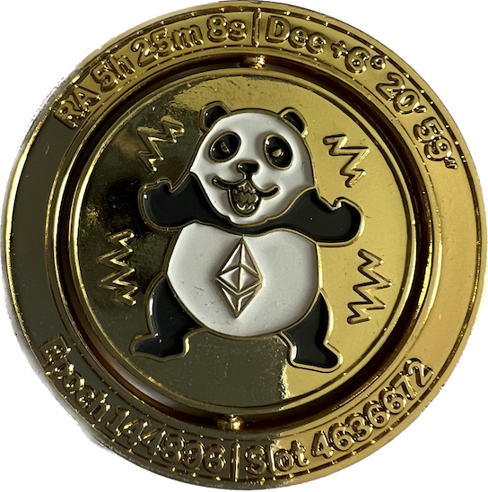

Moving On From ConsenSys
After nearly 5 years working with the ConsenSys protocols group, I’ll be finishing up at the end of January.
So what happens with Teku? It will carry on as usual and keep going from strength to strength. There’s an amazing team of people building Teku and I have complete confidence in their ability to continue building Teku and contributing to the future of the Ethereum protocol. Teku started well before I was involved with it and has always been the work of an amazing team of people. I just wound up doing a lot of the more visible stuff - answering discord questions and reacting to the ad-hoc stuff that popped up.
My time at ConsenSys actually started by working on Besu, back before it’s initial release when it was called Pantheon. I was part of the team adding the initial support for private networks and then later moved over to join the team focussed on MainNet compatibility with work on things like fast sync, core EVM work and all that kind of fun. After that I got to help build a new team to focus on setting up tooling to make development and testing easier - modernising build and release systems, automated deployment and monitoring of test nodes and so on.
Then this “Ethereum 2.0” thing seemed like it might actually be ready to move out of the research phase and move towards production. So I joined the research team that was building “Artemis” to start bringing it out of research and to a real production-ready client. Most of the research team moved on to other research topics and we built a mostly new team around what we then called Teku. And so began one heck of a journey leading to the beacon chain launch, Altair and then The Merge. Hearing the crowd cheering in support of the merge at DevCon this year is one of the great highlights of my career.
I’m so lucky to have gotten to work with some truly amazing people. The folks who have been part of the Teku team along our journey share a truly special place in my heart though and I will always be grateful for the shared knowledge, persistence and dedication they have all contributed but even more so the caring, friendly way they contributed it. It’s not just the teams in ConsenSys but right across the Ethereum eco-system. The way the different consensus client teams have come together to push Ethereum forward is particularly amazing. These are ostensibly teams that are competing with each other and yet actively share knowledge to improve both the protocol and other team’s clients.
As I leave ConsenSys, I do so knowing that there are teams of incredible people who will carry on with the work I’m so privileged to have been able to contribute to.
So why the change? Mostly because this is a good time for me personally. As I mentioned, I started working on Teku to bring it out of research and into production. Getting The Merge done is a natural endpoint of that mission and a natural place to start looking for new challenges and opportunities. Obviously there are plenty of remaining things to improve in the Ethereum protocol and clients like Teku, but I’m keen to get a bit further out of my comfort zone.

So what’s next? I’ll be taking up a role as Staff Protocol Engineer with OP Labs to work on Optimism. I started looking at opportunities at Optimism because I’ve seen some of the great work they’ve been doing and I really like their retroactive public goods funding - it shows they’re investing in Ethereum, not just taking what they can get from it. Primarily though for me, finding a great place to work is about finding a great team of people doing interesting work. As I talked with various people from the Optimism team, I found them to be smart, curious, welcoming people who not only wanted to build great software but also wanted to keep improving the way they went about that. Plus I’ll be staying in the Ethereum eco-system so still get to work with all those amazing people. I can already see there’s a ton of stuff I can learn from the Optimism team and I think there’s places where I can bring some useful skills and experience beyond just writing some code.
In fact, given they mostly use Go and I have no real Go experience, “just writing some code” will be one of the first fun challenges. Java has kind of followed me for my career, not entirely deliberately though I do like it as a language, so I’m actually excited to really dig into writing production grade Go code.
Philosophically, one of the things I dislike about Ethereum (and blockchains in general) is that the high cost of transactions means it often becomes a rich person’s game and it often feels like people just throwing play money around. L2 solutions like Optimism are a big part of solving that by scaling blockchains and dramatically reducing fees. It feels good to me to be contributing to that. So much of the potential of Ethereum is waiting to be unlocked once it really scales. Besides, having worked on execution and consensus layers so far, moving to Layer 2 seems like an obvious next step.
Overall, I’m excited about the future of Teku and will be cheering the team on, and excited about the future of Ethereum and look forward to being part of delivering The Surge.